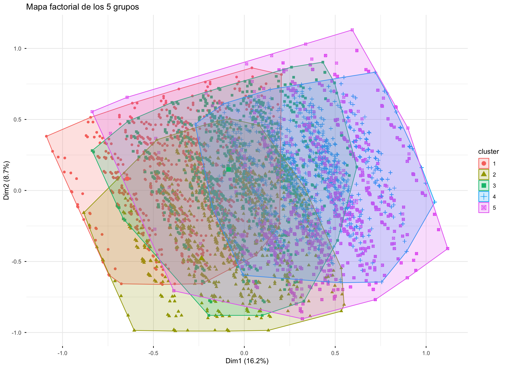

| Grupo | Casos | % |
|---|---|---|
| <none> | 2.331.401 | 19,46 |
| <none> | 1.825.777 | 15,24 |
| <none> | 2.477.427 | 20,68 |
| <none> | 2.545.515 | 21,25 |
| <none> | 2.798.264 | 23,36 |
| NA | 0 | NA |
Solución actual
Los grupos: cómo se ven, qué los distingue y cómo se perfilan
AdvertenciaTodo lo de esta página es provisional
La solución de grupos depende de cómo se cortan los índices en categorías, que es una decisión todavía abierta (ver Pipeline). Cuando se resuelva, esta solución cambia completa: distinto número de personas por grupo, distinto perfil, posiblemente distinta cantidad de grupos razonable.
Sirve para caracterizar y discutir los grupos. No para citar cifras como definitivas.
La solución que se reporta es la de 5 grupos, construida sobre 49.503 casos.
Los grupos todavía no tienen nombre: aparecen como C1 a C5. Ponerles nombre es tarea del equipo, y las dos secciones finales de esta página —qué distingue a cada grupo y el perfil completo— son el insumo para hacerlo.
Tamaño de los grupos
El espacio de las respuestas
El análisis de correspondencias múltiples resume las ocho variables en un espacio de pocas dimensiones. Cada punto del gráfico es una categoría de respuesta; las que aparecen cerca tienden a darse en las mismas personas.
El color indica qué tan bien representada está esa categoría en el plano: las oscuras se leen con confianza, las claras están mal representadas en estas dos dimensiones y no conviene interpretarlas.


Ajuste del modelo
Cuánta de la variación total capta cada dimensión.
| Dimensión | Autovalor | % de varianza | % acumulado |
|---|---|---|---|
| 1 | 0,3238533 | 16,192666 | 16,19267 |
| 2 | 0,1749207 | 8,746037 | 24,93870 |
| 3 | 0,1575808 | 7,879038 | 32,81774 |
| 4 | 0,1387600 | 6,938002 | 39,75574 |
| 5 | 0,1302096 | 6,510481 | 46,26622 |
ImportanteEste porcentaje no sirve para comparar variantes
En un análisis de correspondencias, el % de inercia depende mecánicamente del número de categorías por variable: más categorías producen más inercia total, independientemente de si el modelo es mejor o peor.
Como la decisión abierta sobre categorización cambia justamente el número de categorías, no se puede usar este porcentaje para decidir entre alternativas. Una variante con más categorías va a mostrar un porcentaje distinto sin que eso signifique nada sobre su calidad.
Para una comparación válida haría falta la corrección de Benzécri, que no está implementada. Mientras tanto, esta tabla describe la solución actual y nada más.
Qué distingue a cada grupo
Para cada grupo, las categorías de respuesta que más lo separan del resto de la muestra.
La columna clave es diferencia: cuántos puntos porcentuales más (o menos) frecuente es esa respuesta dentro del grupo que en el total. Una diferencia de +30 significa que esa respuesta es 30 puntos más común en ese grupo que en la población.
| Variable | Respuesta | Diferencia (pp) | % en el grupo | % en el total |
|---|---|---|---|---|
| Modificación de prácticas | Bajas prácticas de evitación | 46,5518974 | 79,240825 | 32,6889279 |
| Inseguridad en espacio público | Baja inseguridad en espacio publico | 44,9878279 | 77,476768 | 32,4889401 |
| Inseguridad en el barrio | Baja inseguridad en el barrio | 37,8371784 | 70,633171 | 32,7959922 |
| Expectativa de ser víctima | No cree que será victima de delito | 33,9402872 | 84,060482 | 50,1201947 |
| Gasto en seguridad | No gasta en medidas de seguridad | 20,1376990 | 73,098126 | 52,9604266 |
| Medidas de la vivienda | Media disposición de medidas vivienda | 14,7350038 | 48,078437 | 33,3434337 |
| Medidas del barrio | Baja adopción de medidas comunitarias | 14,1139450 | 47,259411 | 33,1454659 |
| Inseguridad en la casa | Baja inseguridad en la casa | 12,8039562 | 46,133249 | 33,3292932 |
| Medidas de la vivienda | Baja disposición de medidas vivienda | 11,1898559 | 44,195936 | 33,0060804 |
| Inseguridad en la casa | Media inseguridad en la casa | 3,9901704 | 37,218460 | 33,2282892 |
| Medidas del barrio | Media adopción de medidas comunitarias | 0,7756305 | 34,060482 | 33,2848514 |
| Expectativa de ser víctima | Cree que será victima de otro tipo de delito | -0,1454457 | 0,000000 | 0,1454457 |
| Inseguridad en el barrio | Media inseguridad en el barrio | -10,4260593 | 22,979997 | 33,4060562 |
| Medidas del barrio | Alta adopción de medidas comunitarias | -14,8895755 | 18,680107 | 33,5696826 |
| Expectativa de ser víctima | Cree que será victima de delito no violento | -16,2258380 | 5,607182 | 21,8330202 |
| Inseguridad en la casa | Alta inseguridad en la casa | -16,7941266 | 16,648291 | 33,4424176 |
| Expectativa de ser víctima | Cree que será victima de delito violento | -17,5690035 | 10,332336 | 27,9013393 |
| Inseguridad en espacio público | Media inseguridad en espacio publico | -19,1172442 | 14,632226 | 33,7494697 |
| Modificación de prácticas | Medias prácticas de evitación | -19,1540681 | 14,262089 | 33,4161566 |
| Gasto en seguridad | Gasta en medidas de seguridad | -20,1376990 | 26,901874 | 47,0395734 |
| Inseguridad en espacio público | Alta inseguridad en espacio publico | -25,8705837 | 7,891006 | 33,7615902 |
| Medidas de la vivienda | Alta disposición de medidas vivienda | -25,9248597 | 7,725626 | 33,6504858 |
| Modificación de prácticas | Altas prácticas de evitación | -27,3978293 | 6,497086 | 33,8949155 |
| Inseguridad en el barrio | Alta inseguridad en el barrio | -27,4111191 | 6,386833 | 33,7979516 |
| Variable | Respuesta | Diferencia (pp) | % en el grupo | % en el total |
|---|---|---|---|---|
| Medidas de la vivienda | Alta disposición de medidas vivienda | 43,1615354 | 76,812021 | 33,6504858 |
| Gasto en seguridad | Gasta en medidas de seguridad | 26,9144632 | 73,954037 | 47,0395734 |
| Inseguridad en el barrio | Baja inseguridad en el barrio | 25,9989401 | 58,794932 | 32,7959922 |
| Expectativa de ser víctima | No cree que será victima de delito | 20,2245313 | 70,344726 | 50,1201947 |
| Inseguridad en espacio público | Baja inseguridad en espacio publico | 19,5293275 | 52,018268 | 32,4889401 |
| Medidas del barrio | Alta adopción de medidas comunitarias | 18,8316138 | 52,401296 | 33,5696826 |
| Inseguridad en la casa | Media inseguridad en la casa | 17,1989353 | 50,427225 | 33,2282892 |
| Modificación de prácticas | Bajas prácticas de evitación | 17,0017026 | 49,690630 | 32,6889279 |
| Modificación de prácticas | Medias prácticas de evitación | 3,4430066 | 36,859163 | 33,4161566 |
| Inseguridad en la casa | Baja inseguridad en la casa | 2,4986385 | 35,827932 | 33,3292932 |
| Inseguridad en espacio público | Media inseguridad en espacio publico | 2,2405126 | 35,989982 | 33,7494697 |
| Expectativa de ser víctima | Cree que será victima de otro tipo de delito | -0,1454457 | 0,000000 | 0,1454457 |
| Medidas del barrio | Media adopción de medidas comunitarias | -1,4934548 | 31,791397 | 33,2848514 |
| Expectativa de ser víctima | Cree que será victima de delito no violento | -7,8230025 | 14,010018 | 21,8330202 |
| Inseguridad en el barrio | Media inseguridad en el barrio | -9,0689908 | 24,337065 | 33,4060562 |
| Expectativa de ser víctima | Cree que será victima de delito violento | -12,2560830 | 15,645256 | 27,9013393 |
| Medidas de la vivienda | Baja disposición de medidas vivienda | -15,8729042 | 17,133176 | 33,0060804 |
| Inseguridad en el barrio | Alta inseguridad en el barrio | -16,9299493 | 16,868002 | 33,7979516 |
| Medidas del barrio | Baja adopción de medidas comunitarias | -17,3381589 | 15,807307 | 33,1454659 |
| Inseguridad en la casa | Alta inseguridad en la casa | -19,6975738 | 13,744844 | 33,4424176 |
| Modificación de prácticas | Altas prácticas de evitación | -20,4447092 | 13,450206 | 33,8949155 |
| Inseguridad en espacio público | Alta inseguridad en espacio publico | -21,7698401 | 11,991750 | 33,7615902 |
| Gasto en seguridad | No gasta en medidas de seguridad | -26,9144632 | 26,045963 | 52,9604266 |
| Medidas de la vivienda | Media disposición de medidas vivienda | -27,2886311 | 6,054803 | 33,3434337 |
| Variable | Respuesta | Diferencia (pp) | % en el grupo | % en el total |
|---|---|---|---|---|
| Modificación de prácticas | Medias prácticas de evitación | 33,5677238 | 66,98388 | 33,4161566 |
| Inseguridad en espacio público | Media inseguridad en espacio publico | 32,3604545 | 66,10992 | 33,7494697 |
| Inseguridad en el barrio | Media inseguridad en el barrio | 26,0520910 | 59,45815 | 33,4060562 |
| Medidas de la vivienda | Baja disposición de medidas vivienda | 25,5101363 | 58,51622 | 33,0060804 |
| Gasto en seguridad | No gasta en medidas de seguridad | 19,5585091 | 72,51894 | 52,9604266 |
| Inseguridad en la casa | Baja inseguridad en la casa | 10,2034316 | 43,53272 | 33,3292932 |
| Medidas del barrio | Baja adopción de medidas comunitarias | 8,8238485 | 41,96931 | 33,1454659 |
| Inseguridad en la casa | Media inseguridad en la casa | 8,5856553 | 41,81394 | 33,2282892 |
| Expectativa de ser víctima | Cree que será victima de delito violento | 6,9403775 | 34,84172 | 27,9013393 |
| Expectativa de ser víctima | Cree que será victima de otro tipo de delito | -0,1454457 | 0,00000 | 0,1454457 |
| Expectativa de ser víctima | No cree que será victima de delito | -2,1788469 | 47,94135 | 50,1201947 |
| Expectativa de ser víctima | Cree que será victima de delito no violento | -4,6160849 | 17,21694 | 21,8330202 |
| Medidas del barrio | Alta adopción de medidas comunitarias | -8,1084280 | 25,46125 | 33,5696826 |
| Medidas de la vivienda | Media disposición de medidas vivienda | -11,3585823 | 21,98485 | 33,3434337 |
| Inseguridad en el barrio | Baja inseguridad en el barrio | -11,7045181 | 21,09147 | 32,7959922 |
| Medidas de la vivienda | Alta disposición de medidas vivienda | -14,1515540 | 19,49893 | 33,6504858 |
| Inseguridad en el barrio | Alta inseguridad en el barrio | -14,3475729 | 19,45038 | 33,7979516 |
| Inseguridad en espacio público | Alta inseguridad en espacio publico | -14,7093471 | 19,05224 | 33,7615902 |
| Modificación de prácticas | Altas prácticas de evitación | -14,7261448 | 19,16877 | 33,8949155 |
| Inseguridad en espacio público | Baja inseguridad en espacio publico | -17,6511075 | 14,83783 | 32,4889401 |
| Inseguridad en la casa | Alta inseguridad en la casa | -18,7890869 | 14,65333 | 33,4424176 |
| Modificación de prácticas | Bajas prácticas de evitación | -18,8415789 | 13,84735 | 32,6889279 |
| Gasto en seguridad | Gasta en medidas de seguridad | -19,5585091 | 27,48106 | 47,0395734 |
| Variable | Respuesta | Diferencia (pp) | % en el grupo | % en el total |
|---|---|---|---|---|
| Medidas de la vivienda | Media disposición de medidas vivienda | 40,5829781 | 73,926412 | 33,3434337 |
| Inseguridad en la casa | Alta inseguridad en la casa | 34,7342760 | 68,176694 | 33,4424176 |
| Inseguridad en el barrio | Alta inseguridad en el barrio | 32,9541238 | 66,752075 | 33,7979516 |
| Inseguridad en espacio público | Alta inseguridad en espacio publico | 20,8248605 | 54,586451 | 33,7615902 |
| Modificación de prácticas | Altas prácticas de evitación | 18,8057097 | 52,700625 | 33,8949155 |
| Expectativa de ser víctima | Cree que será victima de delito violento | 17,9734173 | 45,874757 | 27,9013393 |
| Modificación de prácticas | Medias prácticas de evitación | 6,3706631 | 39,786820 | 33,4161566 |
| Expectativa de ser víctima | Cree que será victima de delito no violento | 4,8760092 | 26,709029 | 21,8330202 |
| Gasto en seguridad | Gasta en medidas de seguridad | 4,6873919 | 51,726965 | 47,0395734 |
| Inseguridad en espacio público | Media inseguridad en espacio publico | 4,6434789 | 38,392949 | 33,7494697 |
| Medidas del barrio | Media adopción de medidas comunitarias | 1,3774423 | 34,662294 | 33,2848514 |
| Medidas del barrio | Alta adopción de medidas comunitarias | 1,0721130 | 34,641796 | 33,5696826 |
| Expectativa de ser víctima | Cree que será victima de otro tipo de delito | -0,1454457 | 0,000000 | 0,1454457 |
| Medidas del barrio | Baja adopción de medidas comunitarias | -2,4495553 | 30,695911 | 33,1454659 |
| Gasto en seguridad | No gasta en medidas de seguridad | -4,6873919 | 48,273035 | 52,9604266 |
| Inseguridad en el barrio | Media inseguridad en el barrio | -5,0059332 | 28,400123 | 33,4060562 |
| Inseguridad en la casa | Media inseguridad en la casa | -15,2924483 | 17,935841 | 33,2282892 |
| Medidas de la vivienda | Alta disposición de medidas vivienda | -15,4276714 | 18,222814 | 33,6504858 |
| Inseguridad en la casa | Baja inseguridad en la casa | -19,4418278 | 13,887465 | 33,3292932 |
| Expectativa de ser víctima | No cree que será victima de delito | -22,7039807 | 27,416214 | 50,1201947 |
| Medidas de la vivienda | Baja disposición de medidas vivienda | -25,1553066 | 7,850774 | 33,0060804 |
| Modificación de prácticas | Bajas prácticas de evitación | -25,1763729 | 7,512555 | 32,6889279 |
| Inseguridad en espacio público | Baja inseguridad en espacio publico | -25,4683395 | 7,020601 | 32,4889401 |
| Inseguridad en el barrio | Baja inseguridad en el barrio | -27,9481906 | 4,847802 | 32,7959922 |
| Variable | Respuesta | Diferencia (pp) | % en el grupo | % en el total |
|---|---|---|---|---|
| Modificación de prácticas | Altas prácticas de evitación | 45,6573833 | 79,5522987 | 33,8949155 |
| Inseguridad en espacio público | Alta inseguridad en espacio publico | 42,6186547 | 76,3802449 | 33,7615902 |
| Medidas de la vivienda | Alta disposición de medidas vivienda | 33,3742080 | 67,0246938 | 33,6504858 |
| Inseguridad en el barrio | Alta inseguridad en el barrio | 29,0307976 | 62,8287492 | 33,7979516 |
| Expectativa de ser víctima | Cree que será victima de delito no violento | 26,0087786 | 47,8417988 | 21,8330202 |
| Gasto en seguridad | Gasta en medidas de seguridad | 22,9564114 | 69,9959847 | 47,0395734 |
| Inseguridad en la casa | Alta inseguridad en la casa | 20,2315434 | 53,6739611 | 33,4424176 |
| Medidas del barrio | Alta adopción de medidas comunitarias | 13,4791027 | 47,0487854 | 33,5696826 |
| Expectativa de ser víctima | Cree que será victima de delito violento | 5,9673618 | 33,8687011 | 27,9013393 |
| Expectativa de ser víctima | Cree que será victima de otro tipo de delito | 0,5773007 | 0,7227464 | 0,1454457 |
| Inseguridad en el barrio | Media inseguridad en el barrio | -2,5588368 | 30,8472194 | 33,4060562 |
| Medidas de la vivienda | Baja disposición de medidas vivienda | -5,1803426 | 27,8257378 | 33,0060804 |
| Inseguridad en la casa | Baja inseguridad en la casa | -9,5288515 | 23,8004417 | 33,3292932 |
| Inseguridad en la casa | Media inseguridad en la casa | -10,7026919 | 22,5255973 | 33,2282892 |
| Medidas del barrio | Baja adopción de medidas comunitarias | -12,8985276 | 20,2469384 | 33,1454659 |
| Inseguridad en espacio público | Media inseguridad en espacio publico | -15,1588253 | 18,5906444 | 33,7494697 |
| Modificación de prácticas | Medias prácticas de evitación | -18,8708846 | 14,5452720 | 33,4161566 |
| Gasto en seguridad | No gasta en medidas de seguridad | -22,9564114 | 30,0040153 | 52,9604266 |
| Inseguridad en el barrio | Baja inseguridad en el barrio | -26,4719608 | 6,3240313 | 32,7959922 |
| Modificación de prácticas | Bajas prácticas de evitación | -26,7864987 | 5,9024292 | 32,6889279 |
| Inseguridad en espacio público | Baja inseguridad en espacio publico | -27,4598294 | 5,0291106 | 32,4889401 |
| Medidas de la vivienda | Media disposición de medidas vivienda | -28,1938654 | 5,1495684 | 33,3434337 |
| Expectativa de ser víctima | No cree que será victima de delito | -32,5534411 | 17,5667537 | 50,1201947 |
NotaPor qué “diferencia” y no el estadístico habitual
El indicador que se usa normalmente para esto es el v-test. Con el tamaño de muestra de este análisis se vuelve inservible para ordenar: en más de la mitad de las filas el valor se sale de escala y todas quedan empatadas, justo entre las asociaciones más fuertes, que son las que interesan.
La diferencia en puntos porcentuales dice lo mismo, nunca empata artificialmente y se lee en unidades interpretables. El v-test sigue disponible en la tabla descargable.
Perfil de los grupos
La tabla completa: cada variable, cada categoría, y qué porcentaje de cada grupo está en ella. Cada columna suma 100% dentro de cada bloque de variable.
Se lee por filas: comparando una fila entre columnas se ve qué grupos concentran esa respuesta.
| Variable | Categoría | C1 | C2 | C3 | C4 | C5 |
|---|---|---|---|---|---|---|
| Medidas del barrio | Baja adopción de medidas comunitarias | 39,85 | 11,93 | 36,32 | 26,60 | 16,56 |
| Media adopción de medidas comunitarias | 35,36 | 29,84 | 33,89 | 33,77 | 31,33 | |
| Alta adopción de medidas comunitarias | 24,79 | 58,22 | 29,79 | 39,64 | 52,11 | |
| Medidas de la vivienda | Baja disposición de medidas vivienda | 38,31 | 15,28 | 52,11 | 7,64 | 24,83 |
| Media disposición de medidas vivienda | 52,29 | 5,59 | 24,42 | 73,05 | 5,64 | |
| Alta disposición de medidas vivienda | 9,39 | 79,13 | 23,47 | 19,31 | 69,53 | |
| Gasto en seguridad | No gasta en medidas de seguridad | 70,36 | 24,55 | 69,30 | 46,34 | 26,92 |
| Gasta en medidas de seguridad | 29,64 | 75,45 | 30,70 | 53,66 | 73,08 | |
| Modificación de prácticas | Bajas prácticas de evitación | 77,64 | 48,70 | 13,22 | 6,97 | 5,73 |
| Medias prácticas de evitación | 15,29 | 38,51 | 66,83 | 38,10 | 14,14 | |
| Altas prácticas de evitación | 7,07 | 12,79 | 19,95 | 54,94 | 80,12 | |
| Inseguridad en el barrio | Baja inseguridad en el barrio | 69,65 | 56,14 | 17,67 | 4,14 | 5,82 |
| Media inseguridad en el barrio | 23,04 | 24,91 | 62,39 | 26,12 | 28,05 | |
| Alta inseguridad en el barrio | 7,32 | 18,95 | 19,94 | 69,75 | 66,13 | |
| Inseguridad en la casa | Baja inseguridad en la casa | 47,84 | 35,18 | 48,29 | 16,46 | 27,33 |
| Media inseguridad en la casa | 38,12 | 52,62 | 39,66 | 20,44 | 24,71 | |
| Alta inseguridad en la casa | 14,03 | 12,20 | 12,05 | 63,10 | 47,95 | |
| Inseguridad en espacio público | Baja inseguridad en espacio publico | 75,52 | 50,41 | 13,27 | 5,84 | 4,62 |
| Media inseguridad en espacio publico | 16,10 | 38,43 | 68,50 | 39,47 | 19,84 | |
| Alta inseguridad en espacio publico | 8,38 | 11,16 | 18,23 | 54,69 | 75,53 | |
| Expectativa de ser víctima | No cree que será victima de delito | 82,19 | 67,62 | 45,19 | 25,06 | 16,40 |
| Cree que será victima de delito no violento | 5,56 | 14,16 | 17,55 | 26,47 | 48,67 | |
| Cree que será victima de delito violento | 12,24 | 18,21 | 37,26 | 48,47 | 34,34 | |
| Cree que será victima de otro tipo de delito | 0,00 | 0,00 | 0,00 | 0,00 | 0,58 |
| Variable | Categoría | C1 | C2 | C3 | C4 | C5 |
|---|---|---|---|---|---|---|
| Percepción de desórdenes | Baja percepción de desordenes | 40,71 | 31,23 | 23,19 | 15,10 | 14,88 |
| Media percepción de desordenes | 35,45 | 35,96 | 34,29 | 31,28 | 28,53 | |
| Alta percepción de desordenes | 23,84 | 32,81 | 42,52 | 53,62 | 56,59 | |
| Macrozona | Zona norte | 14,56 | 9,57 | 16,61 | 12,79 | 10,98 |
| Zona centro | 37,21 | 29,35 | 29,92 | 29,39 | 27,55 | |
| Zona sur | 13,06 | 5,16 | 6,92 | 4,50 | 3,11 | |
| Zona metropolitana | 35,17 | 55,92 | 46,54 | 53,32 | 58,37 | |
| Percepción de incivilidades | Baja percepción de incivilidades | 44,76 | 31,46 | 23,92 | 12,59 | 10,47 |
| Media percepción de incivilidades | 35,38 | 38,57 | 36,24 | 31,74 | 29,49 | |
| Alta percepción de incivilidades | 19,86 | 29,98 | 39,84 | 55,67 | 60,03 | |
| Se informa por experiencia personal | No se informa por experiencia personal | 75,93 | 78,86 | 76,99 | 76,66 | 75,97 |
| Se informa por experiencia personal | 23,84 | 21,03 | 22,94 | 23,31 | 24,02 | |
| No sabe | 0,21 | 0,11 | 0,06 | 0,03 | 0,01 | |
| No responde | 0,01 | 0,00 | 0,00 | 0,00 | 0,00 | |
| Se informa por otras personas | No se informa por otras personas | 42,97 | 45,31 | 41,85 | 39,95 | 42,84 |
| Se informa por otras personas | 56,80 | 54,58 | 58,08 | 60,02 | 57,15 | |
| No sabe | 0,21 | 0,11 | 0,06 | 0,03 | 0,01 | |
| No responde | 0,01 | 0,00 | 0,00 | 0,00 | 0,00 | |
| Se informa por prensa | No se informa por prensa | 41,91 | 40,74 | 39,74 | 37,88 | 36,80 |
| Se informa por prensa | 57,86 | 59,15 | 60,19 | 62,10 | 63,20 | |
| No sabe | 0,21 | 0,11 | 0,06 | 0,03 | 0,01 | |
| No responde | 0,01 | 0,00 | 0,00 | 0,00 | 0,00 | |
| Se informa por redes sociales | No se informa por RRSS | 42,19 | 41,20 | 39,19 | 42,58 | 42,97 |
| Se informa por RRSS | 57,58 | 58,69 | 60,75 | 57,39 | 57,02 | |
| No sabe | 0,21 | 0,11 | 0,06 | 0,03 | 0,01 | |
| No responde | 0,01 | 0,00 | 0,00 | 0,00 | 0,00 | |
| Se informa por televisión | No se informa por noticias | 53,73 | 55,15 | 51,03 | 48,01 | 48,17 |
| Se informa por noticias | 46,05 | 44,74 | 48,90 | 51,97 | 51,83 | |
| No sabe | 0,21 | 0,11 | 0,06 | 0,03 | 0,01 | |
| No responde | 0,01 | 0,00 | 0,00 | 0,00 | 0,00 | |
| Tramo de edad | 0 a 29 años | 28,83 | 29,39 | 30,01 | 22,39 | 16,47 |
| 30 a 59 años | 46,44 | 51,92 | 49,31 | 54,40 | 62,22 | |
| 60 años o más | 24,73 | 18,69 | 20,68 | 23,21 | 21,32 | |
| Nivel educacional | Educación básica o menos | 15,52 | 7,76 | 11,76 | 12,36 | 8,92 |
| Educación secundaria | 44,26 | 35,30 | 44,81 | 43,40 | 38,80 | |
| Educación terciaria | 39,75 | 56,66 | 42,96 | 43,72 | 52,07 | |
| Sin dato | 0,28 | 0,22 | 0,27 | 0,32 | 0,12 | |
| Nivel ignorado | 0,19 | 0,05 | 0,19 | 0,20 | 0,09 | |
| Nivel socioeconómico | Bajo | 47,06 | 28,93 | 45,10 | 44,93 | 34,86 |
| Medio | 36,92 | 39,90 | 38,67 | 40,79 | 43,61 | |
| Alto | 16,02 | 31,17 | 16,23 | 14,28 | 21,53 | |
| Sexo | Hombre | 60,97 | 57,48 | 49,09 | 40,98 | 41,11 |
| Mujer | 39,03 | 42,52 | 50,91 | 59,02 | 58,89 | |
| Victimización (delitos contra las personas) | No | 84,32 | 76,00 | 72,37 | 68,28 | 65,22 |
| Sí | 15,68 | 24,00 | 27,63 | 31,72 | 34,78 | |
| Victimización (delitos violentos) | No | 97,12 | 96,52 | 94,45 | 93,47 | 92,58 |
| Sí | 2,88 | 3,48 | 5,55 | 6,53 | 7,42 |
AdvertenciaRecordatorio
Las variables percepción de desórdenes e incivilidades dependen además de una segunda decisión abierta, sobre cómo tratar la no-respuesta. Su escala puede cambiar independientemente de lo que pase con la categorización.